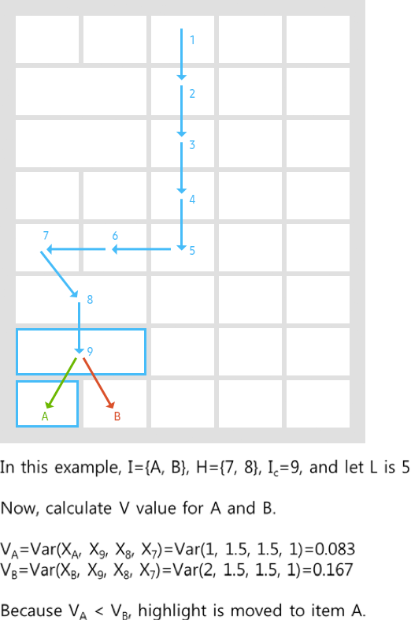

- Overall
-
- • Basic Short pressing UP / DOWN / RIGHT / LEFT key moves highlight (focus) up / down / right / left by 1 unit, respectively, unless defined otherwise.
- • Long pressing (press & hold) UP/ DOWN / RIGHT / LEFT key move highlight (focus) up / down / right / left by 1 unit first, and after 0.5 sec, further moves the highlight continuously until the button is released.
- • Regarding long press time out, use 1.0 sec when activating another function and 0.5 sec when activating continuous input of current key value.
- • When the highlight reaches the end of a list, further input does not move the highlight to the first item (no circulation is allowed).
- • In 2D item layout, when the layout is not a perfect grid but is composed of different sized items (e.g. GUIDE), therefore, when there are multiple items sharing a side of the current item, highlight moves to one of those multiple items minimizing the fluctuation of highlight movement.
- • There are 4 types like below specified.
- Navigation
-
- 1-Directonal Line UI (Same Item Size)
-
- - Before reaching either end of items presented on the current screen, moving highlight previous or next item moves not the list itself but the highlight. (Here, the end of item is defined as the leftmost or rightmost item fully shown in the current screen.)
- - When the highlight is on either end of the items presented on the current screen, further moving highlight moves the list to the opposite direction to the pressed direction by item size and the highlight moves to the next item.
- - Activity spec: Vertical type UI – Press Left/Right, Horizontal type UI – Press Up/Down Key
- 1-Directonal Line UI (Different Item Size)
-
- - Before reaching either end of items presented on the current screen, moving highlight previous or next item moves not the list itself but the highlight. (Here, the end of item is defined as the leftmost or rightmost item fully shown in the current screen.)
- - When the highlight is on either end of the items presented on the current screen, further moving highlight moves the list to the opposite direction to the pressed direction by item size and the highlight moves to the next item.
- - Activity spec: Vertical type UI – Press Left/Right, Horizontal type UI – Press Up/Down Key
- 2-Directonal Grid-Type items Basic Rule
-
- - Minimize the fluctuation item center coordination.
- - Fluctuation can be measured by variance or sum of absolute values of coordinates of recently navigated 5 items.
- Highlight moves long the path ‘A’ because the path minimizes the variance of x-coordinates of recently navigated items.
-
- Highlight moves long the path ‘A’ because the path minimizes the variance of y-coordinates of recently navigated items.
-
- 2-Directonal Grid-Type items Basic Rule - General algorithm

- 2-Directonal Grid-Type items Basic Rule - Example case (1)
- 
- 2-Directonal Grid-Type items Basic Rule - Example case (2)
- 2-Directonal Grid-Type items Basic Rule - Example case (3)
-
- When moving highlight to the different level, move to the item closed to the current highlight.
-
- 2-Directonal Grid-Type items Basic Rule - When there is no last item in the list

- Tab UI - basic navigation rule (1) immediate list change by moving highlight
-
- - When moving highlight from a category tab to sub-category item region, the first sub-category item has the highlight.
- - However, when moving highlight from a sub-category item to a category tab and moving the highlight back to the sub-category item region, the last focused item has the highlight
- Tab UI - basic navigation rule (2) list change by selecting highlight
-
- - When selecting highlight in category, the first sub-category item has the highlight.
- - However, when moving the highlight back to the category item region, the last focused item has the highlight.
- D-Pad Long Press
-
- Highlight Speed / Movement Curve
-
-
- • Longpress Delay : 250ms
- The time long press gets triggered from the time D-Pad pressed.
- • Longpress Interval : 180ms / Item
- The time that highlight moves one item to the next while long press triggered.
- Example (1) - Horizontal List
-
- • Before reaching either end of items presented on the current screen, moving highlight previous or next item moves not the list itself but the highlight.
- • When the highlight is on either end of the items presented on the current screen, further moving highlight moves the list and the highlight does not move.
- Example (2) - Vertical List
-
- • Before reaching either end of items presented on the current screen, moving highlight previous or next item moves not the list itself but the highlight.
- • When the highlight is on either end of the items presented on the current screen, further moving highlight moves the list and the highlight does not move.
- Example (3) - Page Specified
-
- • when moving to next page by long pressing D-pad, move highlight to the first item in the list on the next page.
- Example (4) - Tab UI
-
- • Continuous highlight movement by long pressing D-pad key is valid only in the same list items.
- • Highlight movement across different lists, categories, depths follow below scenario.